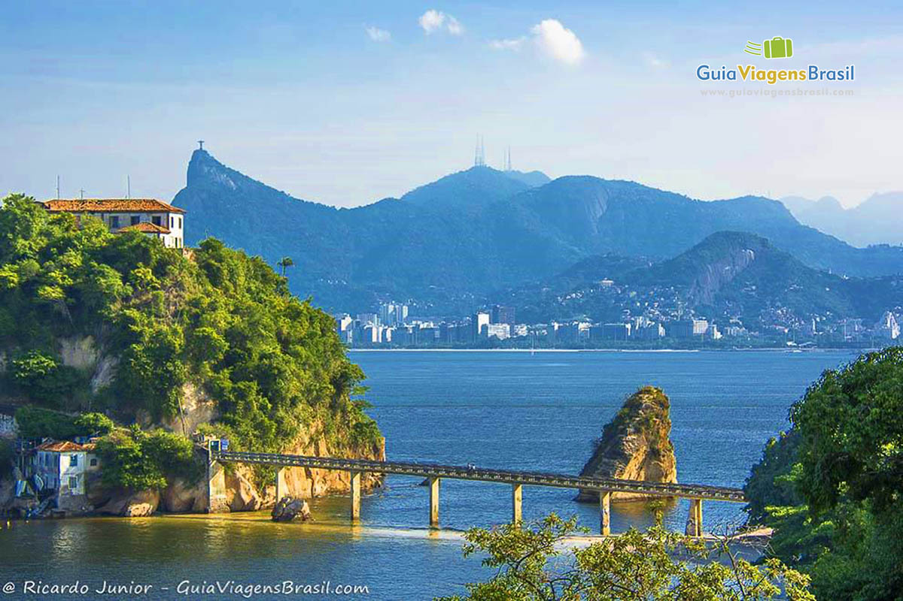

Esse é o Texto original. Clique no botão para alterá-lo
1. O nome Niterói é de origem indígena e significa "água escondida".
2. A cidade foi anteriormente chamada de "Vila Real da Praia Grande".
3. Em 1834, a cidade passou a se chamar Niterói, quando se tornou a capital da Província do Rio de Janeiro.
4. Niterói é banhada pela Baía de Guanabara e pelo Oceano Atlântico.
5. A cidade possui uma vida cultural rica, com o Museu de Arte Contemporânea e o Caminho Niemayer.
6. Niterói é um destino turístico popular, atraindo milhares de visitantes ao longo do ano.
